금속재료기사 (2018-04-28 기출문제)
1과목: 금속조직학
1. 상의 계면(interface)에 대한 설명 중 틀린 것은?
- 계면에너지가 작은 면의 성장속도는 느리다.
- 원자간 결합에너지가 클수록 계면 에너지가 크다.
- 정합 계면을 가진 석출물은 성장하면서 정합성을 상실할 수 있다.
- 두 상의 결정구조, 조성 또는 방위가 다른 경우도 계면에서 두 상 사이에 변형을 일으키지 않는 원자대응이 이루어지더라도 정합계면을 이룰 수 없다.
(정답률: 87%)

2. 두 개의 원자가 상호 교환하는 대신에 3개 또는 4개의 원자가 집단으로 링(ring) 상으로 회전함으로써 위치가 변하는 확산 기구는?
- 간접 교환형 기구
- 직접 교환형 기구
- 밀집 이온형 기구
- 격자간 원자형 기구
(정답률: 73%)
3. 순철에서 체심입방격자에서 면심입방격자로 변태하는 것을 무엇이라 하는가?
- 자기변태
- 상온변태
- 고온변태
- 동소변태
(정답률: 95%)
4. 공정반응에서 층상조직을 형성할 때 층상간격은 냉각속도에 따라 어떻게 변하는가?
- 냉각속도가 빨라지면 넓어진다.
- 냉각속도가 빨라지면 좁아진다.
- 냉각속도에 관계없이 조성에 따라 넓어진다.
- 조성과 냉각속도와는 상관없이 항상 일정하다.
(정답률: 92%)
5. 오스테나이트가 마텐자이트로 변화할 때의 특징과 관계없는 것은?
- 급속 냉각함에 의하여 일어나는 변태이다.
- 확산에 의하여 일어나는 변태이다.
- Ms 점은 조성에 따라서 변한다.
- 협동적 원자운동에 의한 변태이다.
(정답률: 84%)
6. 전위(dislocation)의 스트레인 에너지와 관련이 가장 먼 것은?
- 전위의 방향
- 버거스 벡터
- 전위의 총 길이
- 재료의 전단계수
(정답률: 63%)
7. 다음 포정형 상태도에서 X 합금의 열분석곡선은 어느 것이 가장 적합한가?
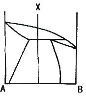
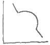
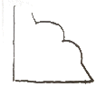
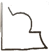
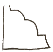
(정답률: 80%)
8. 금속간 화합물의 특징에 대한 설명 중 틀린 것은?
- 전기저항이 크다.
- 소성변형이 쉽다.
- 복잡한 결정구조를 갖는다.
- 성분금속의 원자가 결정의 단위격자 내에서 일정한 자리를 점유하고 있다.
(정답률: 77%)
9. 금속재료의 강도를 증가시키는 방법이 아닌 것은?
- 고용강화
- 석출강화
- 분산강화
- 결정립조대화 강화
(정답률: 90%)
10. 결정의 구조에서 축의 길이가 a = b = c 이고 축각이 α = β = γ가 = 90° 인 결정계는?
- 단사정체
- 삼사정계
- 입방정계
- 정방정계
(정답률: 88%)
11. 쇼트키(shottky) 결함은 다음 중 어느 결함에 속하는가?
- 점결함
- 선결함
- 면간결함
- 체적결함
(정답률: 88%)
12. 금속의 변태점 측정에 사용되는 방법이 아닌 것은?
- 열분석법
- 전기저항법
- 열팽창법
- 마크로검사법
(정답률: 90%)
13. Fe-C 평형상태도에서 오스테나이트를 서냉할 때, 약 723℃에서 일어나는 변태는?
- 공정변태
- 공석변태
- 포정변태
- 편석변태
(정답률: 82%)
14. 다음 중 입방정의 면지수와 방향지수가 서로 직교하는 것은?
- (100)과 [100]
- (100)과 [010]
- (001)과 [110]
- (001)과 [100]
(정답률: 84%)
15. 2원합금의 1차 고용체에서 용매원자에 대한 용질원자의 고용도에 영향을 미치는 Hume-Rothery 인자가 아닌 것은?
- 공공
- 원자크기
- 음의 원자가
- 상대적 원자가
(정답률: 75%)
16. 금속에서 규칙-불규칙변태에 대한 설명 중 틀린 것은?
- 원자의 배열이 바뀐다.
- 규칙-불규칙변태는 넓은 온도범위에 걸쳐 일어난다.
- 규칙-불규칙에 따라 금속재료의 성질변화는 발생하지 않는다.
- 고온에서 불규칙 상태의 고용체를 천천히 냉각하면 어떤 온도에서 규칙격자가 형성되는 온도를 전이온도라 한다.
(정답률: 85%)
17. [그림]은 순금속의 냉각 곡선이다. 융점에서 수평을 이루는데 여기서 Gibbs의 상률을 적용한 자유도(E)는? (단, 압력이 일정하다.)
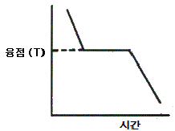
- 0
- 1
- 2
- 3
(정답률: 82%)
18. 금속재료를 냉간 가공한 후 어닐링처리를 행할 때 일어나는 회복과정에 관련된 내용이 아닌 것은?
- 경도의 감소
- 전위밀도의 감소
- 전기전도도의 증가
- 결정립 형상의 변화
(정답률: 68%)
19. 다음 그림은 어떤 형의 규칙격자 구조를 나타내는가?
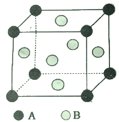
- 체심입방격자 AB형
- 면심입방격자 AB형
- 체심입방격자 AB3형
- 면심입방격자 AB3형
(정답률: 76%)
20. 베이나이트(bainite)에 대한 설명으로 틀린 것은?
- 베이나이트는 상부베이나이트, 하부베이나이트로 나눌 수 있다.
- 하부베이나이트는 페라이트 가지들이 군집하여 깃털 모양을 하고 있다.
- 연속냉각 혹은 등온변태를 시킬 때 생성되는 조직이다.
- 페라이트와 시멘타이트 사이의 탄소확산에 의하여 생성된다.
(정답률: 77%)
2과목: 금속재료학
21. 시효(aging)현상과 관련이 없는 것은?
- 석출
- 비열
- 과포화
- 고용한도
(정답률: 85%)
22. Babbit Metal의 주요 성분으로 옳은 것은?
- Cu-Pb
- Pb-Sn-Sb
- Sn-Sb-Cu
- Zn-Al-Cu
(정답률: 84%)
23. 내해수성이 좋고 수압이나 증기압에도 잘 견디므로 선박용 재료 등에 사용되는 실용 주석 청동은?
- 문쯔메탈
- 퍼멀로이
- 하스텔로이
- 애드미럴티 건 메탈
(정답률: 82%)
24. 구상흑연주철에서 구상화에 미치는 원소의 영향에 대한 설명으로 틀린 것은?
- 스테다이트(steadite)는 P에 의해서 생성된다.
- 연성의 재질을 얻기 위해서는 P의 함량이 적은 편이 좋다.
- 탄소당량(CE)값이 아공정으로 내려갈수록 수축결함이 잘 나타난다.
- 탄소당량(CE)값이 과공정구역에 들어가면 흑연은 구상화되기 어렵다.
(정답률: 70%)
25. 다음 중 실용적 수소저장합금이 가져야 할 성질이 아닌 것은?
- 수소의 흡수와 방출속도가 클 것
- 수소의 흡수와 방출 시 평형압력의 차가 클 것
- 상온근방에서 수 기압의 수소해리 평형 압력을 가질 것
- 단위 중량 및 단위체적당 수소 흡수와 방출량이 많을 것
(정답률: 85%)
26. 고망간강(high manganese steel)에 대한 설명으로 틀린 것은?
- 기지는 오스테나이트(austenite)조직을 갖는다.
- 열처리에는 수인법(water toughening)을 이용한다.
- 열전도성이 좋고 팽창계수가 작아 열변형을 일으키지 않는다.
- 항복정은 낮으나 인장강도는 높게 되어 파괴에 대하여 높은 인성을 나타낸다.
(정답률: 69%)
27. Mg 금속에 대한 설명으로 틀린 것은?
- 비중이 약 1.7 정도이다.
- 알루미늄보다 쉽게 부식한다.
- 면심입방격자(BCC)구조를 갖는다.
- Zr의 첨가로 결정립은 미세하고, 희토류 원소의 첨가로 고온크리프 특성이 우수하다.
(정답률: 83%)
28. 담금질한 상태의 강은 경도가 매우 높으나 취약해서 실용할 수 없어 변태점 이하의 적당한 온도로 재가열하여 사용해 인성과 같은 기계적 성질을 향상시키는 열처리법은?
- 어닐링(annealing)
- 담금질(quenching)
- 뜨임(tempering)
- 노멀라이징(normalizing)
(정답률: 89%)
29. 쾌삭강(free cutting steel)의 피삭성을 증가시키는 합금 원소는?
- C
- Si
- Ni
- Se
(정답률: 64%)
30. 강의 조직 중에서 가장 큰 팽창을 하는 것은?
- 펄라이트(Pearlite)
- 소르바이트(Sorbite)
- 마텐자이트(Martensite)
- 오스테나이트(Austenite)
(정답률: 83%)
31. 강의 상온취성(cold shortness)에 주요 원인이 되는 원소는?
- Mn
- Su
- P
- S
(정답률: 83%)
32. 오스테나이트계 스테인리스강의 부식을 입계부식과 응력부식균열로 나눌 때 입계부식을 방지하기 위한 방법이 아닌 것은?
- 탄소 함량을 약 0.03% 미만으로 낮게 한다.
- 쇼트 피닝을 실시하고, 고 Ni 재료를 사용한다.
- Cr 탄화물의 석출을 막기 위하여 Ti, Nb등을 첨가한다.
- 고온으로 가열하여 Cr탄화물을 고용시킨 후에 급냉한다.
(정답률: 63%)
33. 황동의 자연균열(season crack)을 방지하기 위한 방법을 설명한 것 중 틀린 것은?
- 도료나 아연도금을 한다.
- 응력제거 풀림을 한다.
- Sn이나 Si를 첨가한다.
- Hg 및 그 화합물을 첨가한다.
(정답률: 81%)
34. 다음 중 변압기의 철심으로 사용되는 전자강판(규소강판)으로 가장 적합한 합금강은?
- Fe-3%Si 강
- SKH2 강
- Hadfield 강
- 13Cr 스테인리스 강
(정답률: 77%)
35. 분말을 캡슐에 넣어 진공 밀폐한 것을 고압용기에 넣은 후 고온고압의 불활성가스에서 압력을 가하여 압축과 소결을 동시에 실시하는 성형법은?
- 소결단조법
- 사출성형법l
- 분무성형법
- 열간정수압성형법
(정답률: 74%)
36. 조직검사에서 조직의 양을 측정하는 방법이 아닌 것은?
- 면적 측정법
- 직선 측정법
- 점의 측정법
- 직각의 측정법
(정답률: 81%)
37. 다이캐스팅용 아연합금에서 합금의 강도와 경도를 증가시키고 유동성 개선을 위하여 첨가되는 합금 원소는?
- Al
- Li
- Si
- Sn
(정답률: 66%)
38. 섬유강화복합재료에서 섬유 축방향으로 인장력을 가하여 파단하는 경우에 복합재료의 강도와 관계없는 인자는? (단, 섬유와 모재의 계면에서 파단이 일어나지 않는다고 가정한다.)
- 쌍정
- 섬유의 강도
- 섬유의 용적률
- 모재 금속의 파단변형에서의 응력
(정답률: 79%)
39. 10~30% Ni이 함유된 Ni-Cu합금으로 가공성과 내식성이 좋아 화폐, 열교환기 등에 사용되는 것은?
- 백동(Cupronickel)
- 인바(Invar)
- 콘스탄탄(Constantan)
- 모넬메탈(Monel metal)
(정답률: 74%)
40. 빙점 이하의 저온에서 잘 견디는 내한강의 조직은?
- 페라이트
- 펄라이트
- 마텐자이트
- 오스테나이트
(정답률: 63%)
3과목: 야금공학
41. 노외 정련법 중 진공설비가 없는 것은?
- VAD법
- LF법
- VOD법
- RH-OB법
(정답률: 78%)
42. Maxwell 관계식 중 틀린 것은?
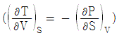
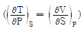
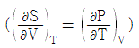
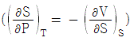
(정답률: 69%)
43. 강의 일반적인 탈황(S)조건의 설명으로 틀린 것은?
- 염기도가 높아야 유리하다.
- Ca, Mg 등의 원소를 용강에 첨가한다.
- 온도는 일반적으로 높은 것이 유리하다.
- C, Si 등이 용철 중에 있는 것보다 없는 것이 유리하다.
(정답률: 70%)
44. 정온에서 기체의 부피가 증가하면 엔트로피는?
- 증가한다.
- 감소한다.
- 변화가 없다.
- 증가하다가 감소한다.
(정답률: 77%)
45. 깁스 자유에너지(G)에 대한 설명으로 틀린 것은?
- 평형상태에서 G가 최대값을 가진다.
- 일정 온도, 일정 압력 하에서 G가 감소하면 자발적인 과정이다.
- 상태 1과 상태 2의 양쪽 상태가 정해지면, 그 과정의 경로에 상관없이 △G값은 동일하다.
- 일정온도에서 이상기체가 압력 P1에서 압력 P2로 등온 팽창할 때 △G 값은 Helmholtz free energy 변화(△A)값과 같다.
(정답률: 75%)
46. 1몰의 이상기체가 10L에서 100L로 가역등온팽창할 때 △S는 약 몇 cal/degree 인가?
- 1.575
- 2.575
- 3.575
- 4.575
(정답률: 56%)
47. 1 몰의 수소기체(H2)가 온도 T에서 지니는 평균 내부에너지를 에너지 균배칙에 의해 계산하면? (단 수소는 이상기체로 가정한다.)
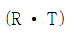
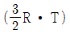
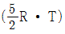
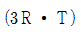
(정답률: 65%)
48. 반사로 제련에 대한 설명으로 틀린 것은?
- 반사로는 분광이 아닌 괴광만을 처리한다.
- 석회는 동이 슬래그 중으로 손실되는 것을 방지한다.
- 석회는 슬래그의 비중을 가볍게 하여 분리가 잘 되게 한다.
- 연료로 석탄, 중유, 천연가스 등 광범위하게 사용된다.
(정답률: 71%)
49. 이상기체가 가역 등온팽창을 할 때와 가역단열팽창을 할 때 주어진 압력 P에서 어떤 경우의 부피가 더 큰가?
- 등온팽창일 때가 더 크다.
- 단열팽창일 때가 더 크다.
- 두 경우의 부피는 같다.
- 압력 P에 따라 다르다.
(정답률: 70%)
50. 어떤 반응에서 각 온도에서의 평형상수 Kp 가 다음 표와 같을 때, 이 온도 범위에서의 생성열은 약 몇 cal/mole 인가?
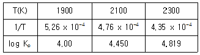
- 17883 cal/mole
- -17883 cal/mole
- 41885 cal/mole
- -41185 cal/mole
(정답률: 37%)
51. 고로 가스(BFG) 중에 가장 많이 함유되어 있는 성분은?
- CO2
- CO
- H2
- N2
(정답률: 59%)
52. 가역반응의 평형점에서 온도가 증가하면 어떻게 되는가?
- △H가 (+)값이 되는 방향으로 진행한다.
- △H가 (-)값이 되는 방향으로 진행한다.
- 흡열도 발열도 하지 않는다.
- △H 값은 관계가 없다.
(정답률: 69%)
53. 활동도에 관한 헨리(Henry)의 법칙 ai=kiNi를 만족하는 용액에서 활동도 계수 ki는?
- 일정하다.
- 항상 1보다 크다.
- 항상 1보다 작다.
- i 성분의 몰분율 Ni의 값에 따라 변한다.
(정답률: 63%)
54. 헬름홀쯔 자유에너지가 일정한 온도하에서 가역과정일 때 최대 일의 양은?
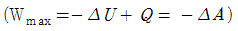
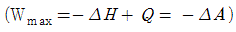
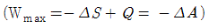
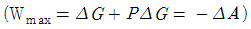
(정답률: 68%)
55. 제철공업에서 철을 용해하기 위한 열원으로 사용하며, 산화철을 금속철로 환원하는 환원제의 역할을 하는 인공 연료는?
- 갈탄
- 중유
- 무연탄
- 코크스
(정답률: 85%)
56. A + B = C + D 반응에서 표준 자유에너지변화가 0 이라면 반응은 어떻게 되는가? (단, 각 물질은 표준상태에 있다고 가정한다.)
- 발열반응이다.
- 평형상태에 있다.
- 왼쪽으로 진행된다.
- 오른쪽으로 진행된다.
(정답률: 85%)
57. 내화 모르타르 분류에서 가열에 따라 일부가 용융 응고하여 강도가 커지며, 결합제로는 점토, 벤토나이트 등이 사용되는 것은?
- 열경화성 모르타르
- 기경성 모르타르
- 수경성 모르타르
- 지경성 모르타르
(정답률: 82%)
58. 1kg 의 공기가 일정 체적하에서 온도를 30℃에서 3℃로 강하시켰을 때 이 계의 엔트로피 변화는? (단, 공기의 정적비열 Cv = 0.17 kcal/kg·K 이다.)
- -0.0159 kcal/kg·K
- -0.0224 kcal/kg·K
- -0.0324 kcal/kg·K
- -0.0386 kcal/kg·K
(정답률: 49%)
59. 순수한 물질의 여러 상(고체, 액체, 기체) 사이에 평형이 이루어질 열역학적 조건으로 틀린 것은?
- 각 상에서의 속도 (V)가 모두 같아야 한다.
- 각 상에서의 압력(P)이 모두 같아야 한다.
- 각 상에서의 온도(T)가 모두 같아야 한다.
- 각 상에서의 몰 자유에너지(μ=G/n)가 같아야 한다.
(정답률: 79%)
60. 내화물에 대한 설명으로 옳은 것은?
- 샤모트질은 중성 내화물이다.
- 마그네시아질은 중성 내화물이다.
- 돌로마이트질은 염기성 내화물이다.
- SiO2 는 산성과 염기성의 이중성을 가지고 있다.
(정답률: 78%)
4과목: 금속가공학
61. 전위에 관한 설명으로 틀린 것은?
- 전위는 선결함에 해당된다.
- 각 온도에서 평형 전위농도가 존재한다.
- 칼날전위의 경우, Burgers 벡터와 전위선은 수직이다.
- 전위가 활주할 수 있는 면은 전위선과 Burgers 벡터가 공존하는 면이다.
(정답률: 68%)
62. 압연 시 작업 롤(Roll)의 회전속도와 판재의 수평 이동속도가 같아지는 위치는?
- 입구점
- 출구점
- 중립점
- 슬립점
(정답률: 81%)
63. 크리프(Creep) 저항을 크게 하는 방법이 아닌 것은?
- 기지에 산화물을 분산시킨다.
- 결정립도가 큰 재료를 사용한다.
- 융점이 높은 금속이나 합금을 사용한다.
- 다른 원소를 첨가하여 적층결함 에너지를 증가시킨다.
(정답률: 63%)
64. 단순 인장의 경우, 최대전단력이 작용하는 방향은 몇 도인가?
- 15°
- 30°
- 45°
- 60
(정답률: 84%)
65. 나선전위가 한 슬립면에서 활주하다가, 다른 슬립면으로 활주방향을 바꾸어 활주하는 것은?
- 상승운동
- 비보존운동
- 교차슬립
- 평면(planner)슬립
(정답률: 84%)
66. 면심입방결정에서 [001] 방향으로 인장변형 시킬 때 작용하는 슬립 시스템의 수는 몇 개인가?
- 4개
- 6개
- 8개
- 12개
(정답률: 54%)
67. 항복점 현상에 대한 설명 중 틀린 것은?
- 저탄소강에서 잘 나타나는 현상이다.
- 항복점연신 동안의 변형은 불균일하다.
- 항복점연신에 의하여 매끄러운 표면이 얻어진다.
- 탄소나 질소와 같은 침입형 원자와 전위와의 상호작용 결과 나타나는 현상이다.
(정답률: 71%)
68. 연성-취성 천이온도에 관한 설명 중 옳은 것은?
- 노치가 날카로울수록 천이온도는 낮아진다.
- 변형속도가 클수록 천이온도가 낮아진다.
- 인장시험보다는 충격시험의 경우 천이온도가 낮다.
- 2축 또는 3축 응력 보다는 1축 응력 상태가 되면 천이온도가 낮아진다.
(정답률: 66%)
69. 파괴인성을 나타내는 KC 에 관한 설명 중 틀린 것은?
- 시험 시 가해지는 응력은 균열면에 수직하게 작용한다.
- 수직응력(plane stress)하의 임계응력 확대계수를 나타낸다.
- 일정 시편두께 이상에서 두께에 무관한 재료의 성질을 나타낸다.
- 재료의 강도가 낮을수록 조건을 만족하는 파괴인성시편의 크기는 증대된다.
(정답률: 49%)
70. 280MPa의 응력에서 인장력을 받고 있는 재료의 단위 체적당 탄성변형에너지는 몇 MPa 인가? (단, 탄성률 E=7×104MPa 이다.)
- 5.6
- 0.56
- 0.02
- 0.002
(정답률: 54%)
71. 단위전위의 Burgers 벡터가 격자의 최고원자밀도 방향과 평행할 때 그 전위가 최소의 에너지를 갖는 것은?
- 적층전위
- 단극전위
- 부분전위
- 완전전위
(정답률: 71%)
72. [그림]과 같이 물체 ABCD 에 전단력이 작용하여 원래 90°인 각이 전단응력을 받아 θ만큼 작아졌을 때 전단변형율 γ를 옳게 정의한 식은?
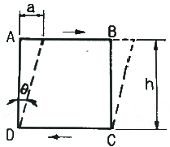
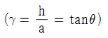
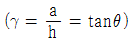
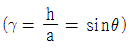
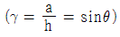
(정답률: 75%)
73. 소성가공에서 열간가공과 냉간가공을 비교 설명한 것 중 옳은 것은?
- 냉간가공보다 열간가공한 것이 산화물층이 적다.
- 냉간가공보다 열간가공한 것이 치수 정밀도가 높다.
- 냉간가공보다 열간가공한 것이 조직과 표면상태가 우수하다.
- 냉간가공보다 열간가공한 것이 단면감소율을 크게 할 수 있다.
(정답률: 75%)
74. 가공경화 후 어닐링 시 재결정에 대한 설명 중 틀린 것은?
- 변형정도가 작을수록 재결정온도가 높아진다.
- 재결정을 일으키는데 최소한의 변형이 필요하다.
- 금속의 순도가 높아질수록 재결정온도는 증가한다.
- 원래의 결정립이 클수록 같은 재결정온도를 얻는데 필요한 냉간 가공량은 커진다.
(정답률: 81%)
75. 항복점이 뚜렷하지 않은 재료에서 내력(耐力)을 정하는 방법 중 옳은 것은?
- 비례한도로 정한다.
- 0.02%의 영구 strain이 발생할 때의 응력
- 0.⑤%의 영구 strain이 발생할 때의 응력
- 0.2%의 영구 strain이 발생할 때의 응력
(정답률: 70%)
76. 항복점 현상과 관련된 거동으로 금속을 냉간가공하고 비교적 저온에서 가열할 때 금속의 강도가 증가하고 연성이 감소하는 현상은?
- 시효경화
- 변형시효
- 석출경화
- 고용경화
(정답률: 70%)
77. 재료의 피로강도를 높이는 방법이 아닌 것은?
- 소재의 인장강도를 높인다.
- 표면을 연마하여 표면 거칠기를 낮춘다.
- 노치나 구멍같은 응력 집중부를 최소화한다.
- 표면에 압축잔류응력이 아닌 인장잔류응력을 형성시킨다.
(정답률: 75%)
78. 전단가공에서 랜싱(lancing)에 관한 설명으로 옳은 것은?
- 판재의 일부분을 남기고 절단하는 가공이다.
- 판재를 두 개 또는 그 이상으로 절단하는 가공이다.
- 판재의 옆면을 여러 가지 모양으로 잘라내는 가공이다.
- 연속 천공이라고도 하며, 판재에 다수의 구멍을 뚫는 가공이다.
(정답률: 74%)
79. 잔류응력에 대한 설명으로 틀린 것은?
- 잔류응력에 의해 파괴가 일어난다.
- 잔류응력에 의해 부식이 촉진된다.
- 잔류응력에 의해 소성변형이 일어난다.
- 탄성영역에서의 잔류응력은 좌굴의 경향을 낮춘다.
(정답률: 65%)
80. σ=kεn거동을 나타내는 재료의 소성변형률이 0.1과 0.2일 때, 유동응력이 각각 180MPa 과 250MPa 이라면 n 값은 약 얼마인가?
- 0.47
- 0.50
- 0.68
- 0.72
(정답률: 47%)
5과목: 표면공학
81. 경질크롬도금의 특징으로 틀린 것은?
- 내마모성이 크다.
- 0.25μm이하로 도금 두께가 얇다.
- 도금액은 서전트 표준액을 사용한다.
- 도금할 필요가 없는 부분은 절연해 준다.
(정답률: 58%)
82. 강재의 가열에서 수반되는 산화 스케일의 설명으로 틀린 것은?
- 산화성 분위기 중에서 가열할 때 발생한다.
- 가능한 한 높은 온도에서 장시간 가열하면 산화 스케일이 제거된다.
- 산세한 것은 수소취성이 발생하기 쉬우므로 주의한다.
- 스케일은 연점이나 담금질 균열의 원인이 되는 일이 많다.
(정답률: 80%)
83. CVD 증착에 대한 설명으로 틀린 것은?
- 비교적 접착력이 좋은 표면이 얻어진다.
- 이론에 가까운 밀도로 증착할 수 있다.
- 미립자의 코팅에는 적용할 수 없다.
- Throwing Power가 좋다.
(정답률: 82%)
84. 이온도금에 대한 설명 중 틀린 것은?
- 밀착력이 우수하다..
- 화합물막의 형성이 용이하다.
- 마톡스(MATTOX)법은 이온도금의 한 종류이다.
- 이온도금은 고상에서 기상으로 결정성장(박막성장)을 시킨다.
(정답률: 75%)
85. 진공증착(도금) 후 래커 코팅을 하는 목적이 아닌 것은?
- 마모로부터 보호
- 염색(색상)보호
- 도금의 변색방지
- 경도 증가 방지
(정답률: 85%)
86. 금속표면처리에서 개별 단위공정에 대한 설명으로 틀린 것은?
- 탈지 - 소재표면에 붙어있는 각종 가공유를 제거하는 것이다.
- 수세 - 각 처리공정에서 오염된 제품표면의 오염물을 물로서 제거하는 것이다.
- 전기도금 - 금속염이 포함된 용액에 전류를 흘려서 음극에 금속을 석출시키는 것이다.
- 침지탈지 - 도금이 마무리된 제품표면에 방청유를 침지하여 내식성을 향상시키는 방법이다.
(정답률: 71%)
87. 이온플레이팅 처리된 다음 화합물 중 비커스경도가 가장 높은 것은?
- TiC
- TiN
- CrC
- Al2O3
(정답률: 84%)
88. 인산염처리 후 방청성을 향상시키기 위한 봉공처리액으로 효과적인 것은?
- 산성액
- 알칼리액
- 초순수액
- 크롬산 또는 크롬산과 인산의 묽은 수용액
(정답률: 80%)
89. 양극산화처리 후 유기염료처리에 대한 설명 중 틀린 것은?
- 유기염료에는 산성, 직접, 염기성, 매염 등이 있다.
- 착색작업에서 주의할 점은 피막생성 후 절대 손을 대서는 안 된다.
- 산화피막용 염료의 양부는 색조, 작업성, 퇴색성, 내열성 등에 의해 결정된다..
- 탈색을 방지하기 위하여 증조 30℃ 이하의 12~15% 용액 중에 약 2시간 침지해서 중화 후 염색한다.
(정답률: 71%)
90. 강재의 표면 경화 시 경화불량의 원인이 아닌 것은?
- 침탄 부족이 발생한 경우
- 침탄 후 담금질 온도가 너무 낮은 경우
- 침탄 후 담금질 시 냉각속도가 빠를 경우
- 표면층에 잔류 오스테나이트가 많이 존재할 경우
(정답률: 63%)
91. 열처리한 강재의 후처리 시 발생하는 수소 취성 방지법은?
- 전기도금을 실시한다.
- 염산 및 황산 수용액에서 세척한다.
- 180℃에서 약 7시간 정도 유지한다.
- 아연을 희생 양극으로 사용한다.
(정답률: 65%)
92. 전해 경화를 하기 위한 전해액의 구비 조건으로 옳은 것은?
- 비전도도가 커야 한다.
- 독성이 있어도 무관하다.
- 전극을 잘 침식시켜 용해하여야 한다.
- 양극의 주위에 수소가 고전압으로 발생하기 쉬워야 한다.
(정답률: 57%)
93. 진공 중에 금속을 가열하면 금속이 증발한다. 이렇게 증발하는 금속 분자를 증기 온도보다 낮은 온도의 기판에 부착시키면 표면에서 증기가 응축하여 박막을 형성하는 코팅법을 무엇이라 하는가?
- 도장법
- 음극전해법
- 진공증착법
- 화학침투법
(정답률: 85%)
94. X선 측정 시 온도 증가에 따른 결과로 볼 수 없는 것은?
- 추가 회절선 생성
- 회절선의 강도 감소
- 회절선의 2θ 위치 변화
- 백그라운드 산란의 강도 증가
(정답률: 73%)
95. 인산염 피막 처리에서 피막의 종류가 아닌 것은?
- 인산니켈계
- 인산아연계
- 인산철계
- 인산망간계
(정답률: 68%)
96. 주사전자현미경에 의한 시료 관찰 시 표면에 대전되면 주사전자선이 불균일하게 편향되므로 이상 콘트라스트를 발생시킨다. 이것을 방지하기 위하여 시료 표면에 금속을 피복하여 관찰하는데 피복용 물질로 적합하지 않은 것은?
- Pt
- Au
- Li
- Cr
(정답률: 69%)
97. 고온용 염욕제로서 고속도공구강을 염욕열처리하려고 할 때 사용되는 단일염은?
- NaNO3
- Nacl
- Bacl2
- KNO3
(정답률: 74%)
98. 심냉처리에 대한 설명으로 틀린 것은?
- 냉각제는 액체산소가 이용된다.
- 잔류 오스테나이트를 감소시키기 위해서 행한다.
- 담금질 후 실온에 방치하면 심냉처리 효과가 적어진다.
- 고합금강의 경우 뜨임과 심냉처리를 반복 실시하여 균열을 막을 수 있다.
(정답률: 64%)
99. 전기도금의 산성액에서 일반적으로 pH값이 낮은 경우에 대한 설명으로 틀린 것은?
- 전류의 흐름이 좋다.
- 고전류밀도 부분이 타기 쉽다.
- pH가 낮다는 것은 즉, [H+]가 작다는 뜻이다.
- 피트가 생기기 쉽고 평활성(平滑性)도 저하된다.
(정답률: 77%)
100. 플라즈마 CVD에 대한 설명으로 틀린 것은?
- 화학적 기상도금보다 코팅 속도가 느리다.
- 폴리머와 같이 고온에서 불안정한 기지 위에 금속코팅이 가능하다.
- 열에너지가 아닌 천이된 전자에 의하여 반응 가스가 활성화된다.
- 열 CVD법에 비하여 기지의 온도가 낮은 (300℃이하) 상태에서 밀착성이 우수한 피막을 얻는다.
(정답률: 71%)